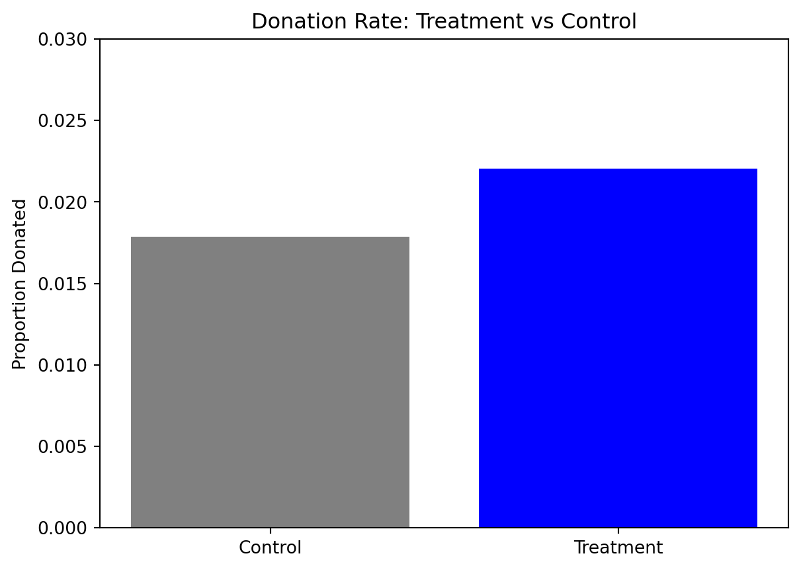
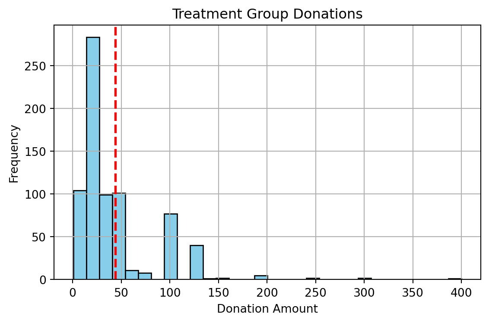
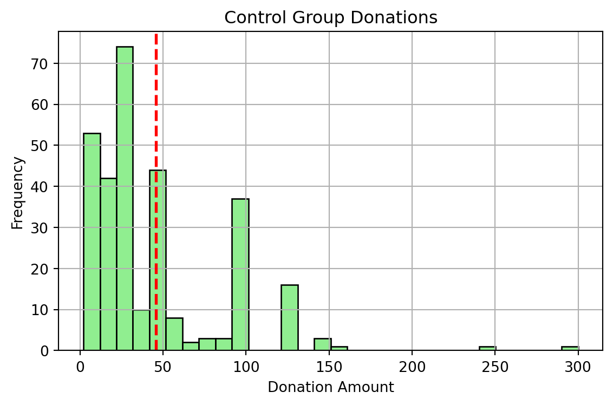
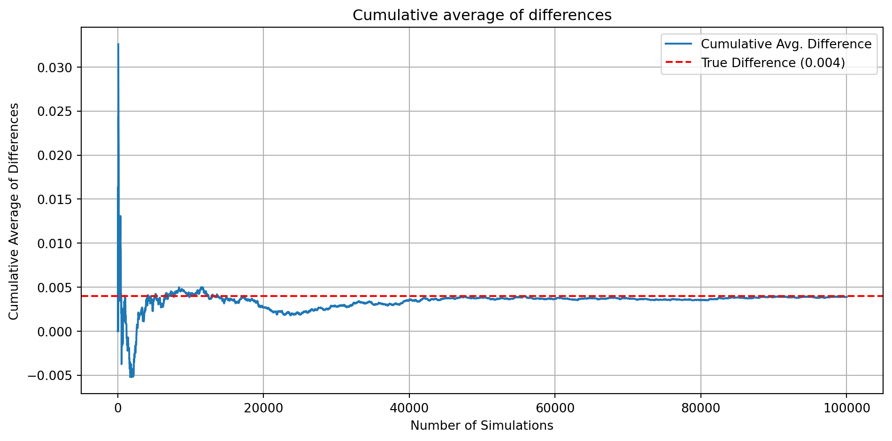
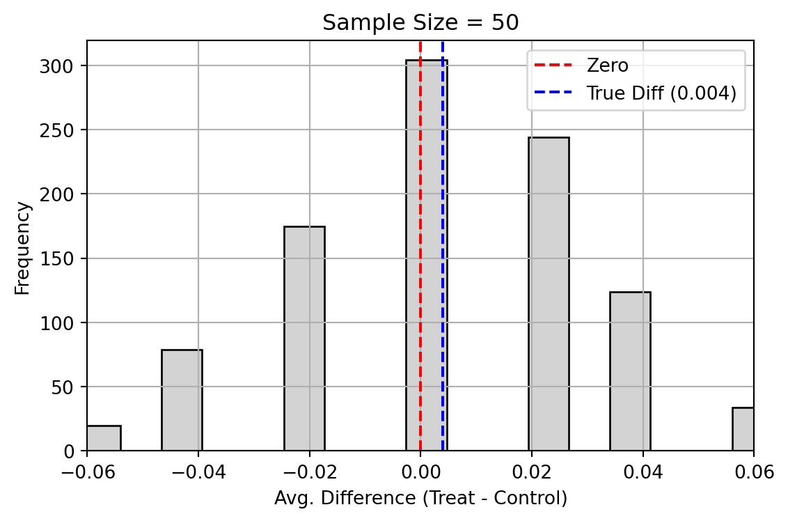
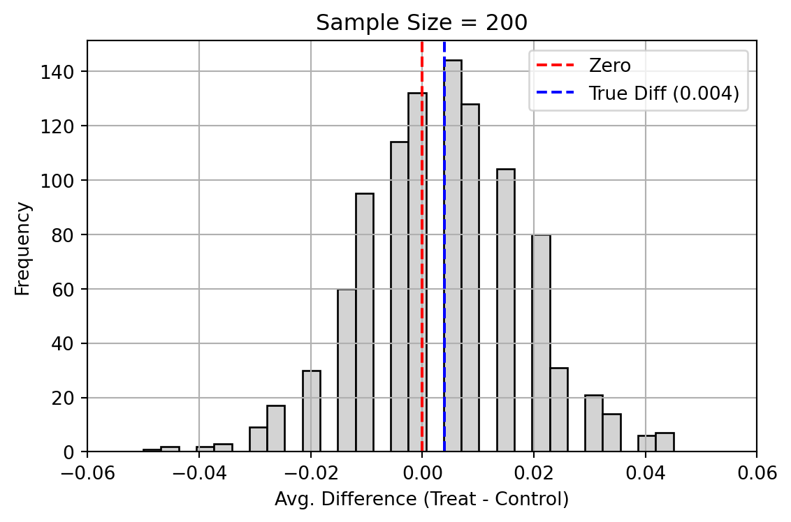
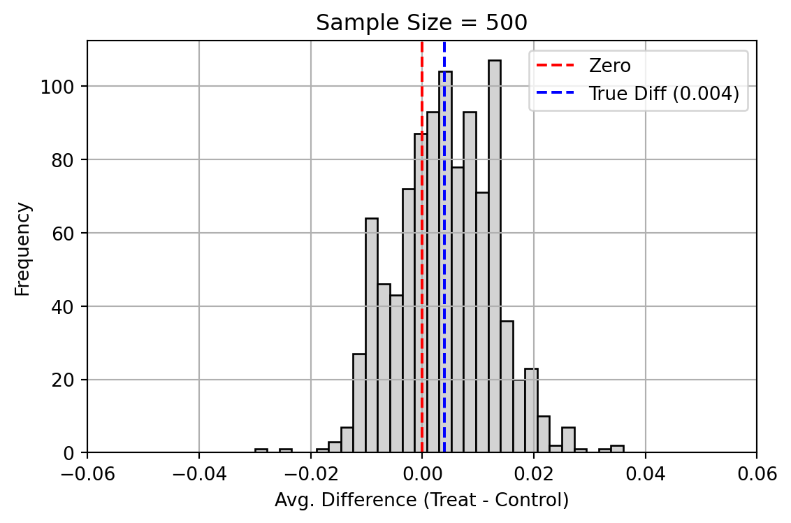
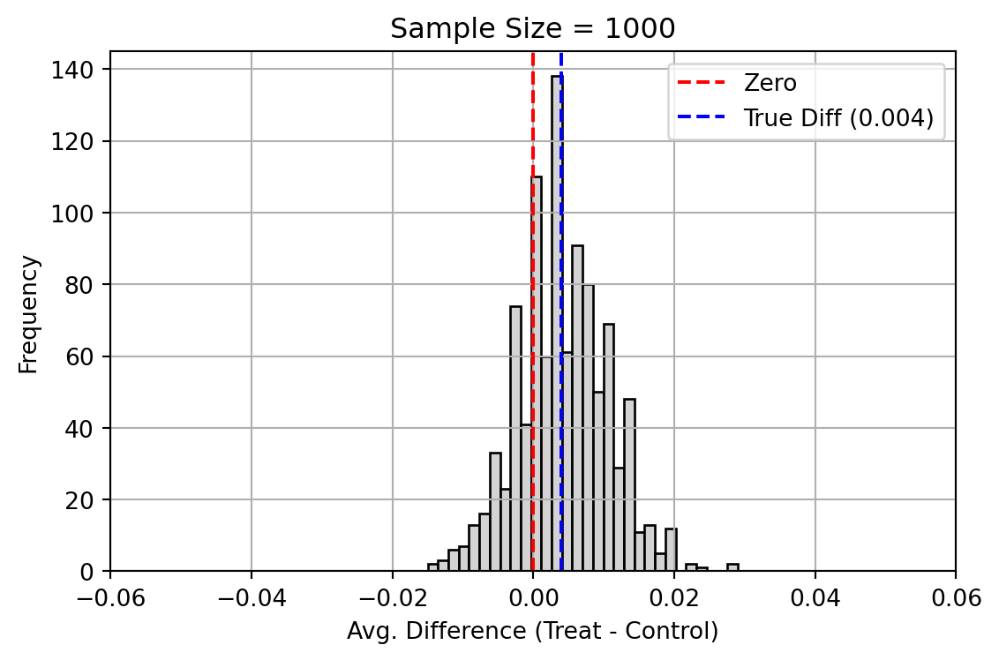

import pandas as pd
data_path = "karlan_list_2007.dta"
df_karlan = pd.read_stata(data_path)A Replication of Karlan and List (2007)
Introduction
Dean Karlan at Yale and John List at the University of Chicago conducted a field experiment to test the effectiveness of different fundraising letters. They sent out 50,000 fundraising letters to potential donors, randomly assigning each letter to one of three treatments: a standard letter, a matching grant letter, or a challenge grant letter. They published the results of this experiment in the American Economic Review in 2007. The article and supporting data are available from the AEA website and from Innovations for Poverty Action as part of Harvard’s Dataverse.
This project seeks to analyze and replicate their results, including the research areas of Balance Test, Experimental Results (Charitable Contribution Made, Differences between Match Rates, Size of Charitable Contribution), and Simulation Experiment (Central Limit Theorem).
Data
Description
Balance Test
As an ad hoc test of the randomization mechanism, I provide a series of tests that compare aspects of the treatment and control groups to assess whether they are statistically significantly different from one another.
import numpy as np
import statsmodels.api as sm
from scipy import stats
balance_vars = ['mrm2', 'hpa', 'freq']
df_clean = df_karlan[['treatment'] + balance_vars].dropna()
# t-test using class slide formula
print("t-test results based on class slide formula:")
for var in balance_vars:
group_treat = df_clean[df_clean['treatment'] == 1][var]
group_ctrl = df_clean[df_clean['treatment'] == 0][var]
x_t = group_treat.mean()
x_c = group_ctrl.mean()
s_t = group_treat.std(ddof=1)
s_c = group_ctrl.std(ddof=1)
n_t = group_treat.shape[0]
n_c = group_ctrl.shape[0]
t_manual = (x_t - x_c) / np.sqrt((s_t**2 / n_t) + (s_c**2 / n_c))
print(f"{var}:")
print(f" Mean (Treatment): {x_t:.3f}")
print(f" Mean (Control): {x_c:.3f}")
print(f" Manual t-stat: {t_manual:.4f}\n")t-test results based on class slide formula:
mrm2:
Mean (Treatment): 13.012
Mean (Control): 12.998
Manual t-stat: 0.1195
hpa:
Mean (Treatment): 59.599
Mean (Control): 58.960
Manual t-stat: 0.9731
freq:
Mean (Treatment): 8.036
Mean (Control): 8.047
Manual t-stat: -0.1086
# linear regression comparison
print("Linear regression results:")
for var in balance_vars:
y = df_clean[var]
X = sm.add_constant(df_clean['treatment']) # Adds intercept term
model = sm.OLS(y, X).fit()
coef = model.params['treatment']
pval = model.pvalues['treatment']
print(f"{var} ~ treatment:")
print(f" Coefficient: {coef:.4f}")
print(f" p-value: {pval:.4f}\n")Linear regression results:
mrm2 ~ treatment:
Coefficient: 0.0137
p-value: 0.9049
hpa ~ treatment:
Coefficient: 0.6389
p-value: 0.3438
freq ~ treatment:
Coefficient: -0.0117
p-value: 0.9135
Analysis for Balance Test:
In order to test whether the randomization successfully balanced key pre-treatment variables, I conducted both manual t-tests (using the class slide formula) and linear regressions comparing treatment and control groups on mrm2, hpa, and freq.
In these cases, the t-statistics were small and p-values were above 0.05, suggesting that there’s no statistically significant differences between the groups. This confirms that randomization was successful.
These results aligns with Table 1 in paper, which further confirms that the treatment and control groups were balanced on observable characteristics before the intervention.
Experimental Results
Charitable Contribution Made
First, I analyze whether matched donations lead to an increased response rate of making a donation.
# Barplot with two bars for treatment and control
import matplotlib.pyplot as plt
# calculate donation rates
donation_rates = df_karlan.groupby('treatment')['gave'].mean()
labels = ['Control', 'Treatment']
plt.bar(labels, donation_rates, color=['gray', 'blue'])
plt.ylabel('Proportion Donated')
plt.title('Donation Rate: Treatment vs Control')
plt.ylim(0, 0.03)
plt.show()
# T-test between the treatment and control groups on the binary outcome
df_gave = df_karlan[['treatment', 'gave']].dropna()
# t-test
gave_treat = df_gave[df_gave['treatment'] == 1]['gave']
gave_ctrl = df_gave[df_gave['treatment'] == 0]['gave']
t_stat, p_val = stats.ttest_ind(gave_treat, gave_ctrl, equal_var=False)
print("T-test results:")
print(f" t-statistic: {t_stat:.4f}")
print(f" p-value: {p_val:.4f}\n")
# linear regression
X = sm.add_constant(df_gave['treatment'])
y = df_gave['gave']
model_ols = sm.OLS(y, X).fit()T-test results:
t-statistic: 3.2095
p-value: 0.0013
# probit regression
probit_model = sm.Probit(y, X).fit()Optimization terminated successfully.
Current function value: 0.100443
Iterations 7Analysis for Experimental Results:
A t-test on the binary outcome showed that people in the treatment group were more likely to donate than those in the control group, and this difference was statistically significant (p-value = 0.0013). A simple linear regression gave the same result: the treatment group had a higher donation rate.
These results match the findings in Table 2A of the paper, showing that just being assigned to the treatment group increased the chance of giving.
Also, regarding the probit regression to model whether someone donated or not, the results consistent with Table 3, Column 1 in the paper.
Differences between Match Rates
Next, I assess the effectiveness of different sizes of matched donations on the response rate.
import pandas as pd
import statsmodels.api as sm
from scipy import stats
df_match = df_karlan[df_karlan['treatment'] == 1].copy()
df_match['ratio1'] = (df_match['ratio'] == 1).astype(int)
df_match['ratio2'] = (df_match['ratio'] == 2).astype(int)
df_match['ratio3'] = (df_match['ratio'] == 3).astype(int)
gave_1to1 = df_match[df_match['ratio1'] == 1]['gave']
gave_2to1 = df_match[df_match['ratio2'] == 1]['gave']
gave_3to1 = df_match[df_match['ratio3'] == 1]['gave']# run t-tests
ttest_2_vs_1 = stats.ttest_ind(gave_2to1, gave_1to1, equal_var=False)
ttest_3_vs_2 = stats.ttest_ind(gave_3to1, gave_2to1, equal_var=False)
# calculate response rates
rate_1to1 = gave_1to1.mean()
rate_2to1 = gave_2to1.mean()
rate_3to1 = gave_3to1.mean()
print("T-test: 2:1 vs 1:1")
print(f" Rate (1:1): {rate_1to1:.5f}")
print(f" Rate (2:1): {rate_2to1:.5f}")
print(f" Difference: {rate_2to1 - rate_1to1:.5f}")
print(f" p-value: {ttest_2_vs_1.pvalue:.5f}\n")
print("T-test: 3:1 vs 2:1")
print(f" Rate (2:1): {rate_2to1:.5f}")
print(f" Rate (3:1): {rate_3to1:.5f}")
print(f" Difference: {rate_3to1 - rate_2to1:.5f}")
print(f" p-value: {ttest_3_vs_2.pvalue:.5f}")T-test: 2:1 vs 1:1
Rate (1:1): 0.02075
Rate (2:1): 0.02263
Difference: 0.00188
p-value: 0.33453
T-test: 3:1 vs 2:1
Rate (2:1): 0.02263
Rate (3:1): 0.02273
Difference: 0.00010
p-value: 0.96003Analysis for A:
The p-values for both comparisons (p = 0.33 for 2:1 vs 1:1, p = 0.96 for 3:1 vs 2:1) show that these differences are not statistically significant.
This supports the authors’ comment on page 8 that “figures suggest” higher match ratios do not lead to significantly higher response rates.
X = df_match[['ratio1', 'ratio2', 'ratio3']]
y = df_match['gave']
model_ratios = sm.OLS(y, X).fit()Coefficient p-value
ratio1 0.02075 0.0
ratio2 0.02263 0.0
ratio3 0.02273 0.0
Analysis for B:
It indicates that the average donation rate for each group and show that all three are statistically significant.
# directly from data
rate_diff_2_vs_1_data = rate_2to1 - rate_1to1
rate_diff_3_vs_2_data = rate_3to1 - rate_2to1
# from regression coefficients
coef_diff_2_vs_1 = model_ratios.params['ratio2'] - model_ratios.params['ratio1']
coef_diff_3_vs_2 = model_ratios.params['ratio3'] - model_ratios.params['ratio2']
print("Response Rate Differences (Direct from Data):")
print(f" 2:1 - 1:1 = {rate_diff_2_vs_1_data:.5f}")
print(f" 3:1 - 2:1 = {rate_diff_3_vs_2_data:.5f}\n")
print("Response Rate Differences (From Regression Coefficients):")
print(f" 2:1 - 1:1 = {coef_diff_2_vs_1:.5f}")
print(f" 3:1 - 2:1 = {coef_diff_3_vs_2:.5f}")Response Rate Differences (Direct from Data):
2:1 - 1:1 = 0.00188
3:1 - 2:1 = 0.00010
Response Rate Differences (From Regression Coefficients):
2:1 - 1:1 = 0.00188
3:1 - 2:1 = 0.00010Analysis for C:
The response rate increased by 0.00188 from the 1:1 to the 2:1 match ratio, and by 0.00010 from the 2:1 to the 3:1 ratio. These results were identical when using regression coefficients. The differences are minimal, indicating that larger match ratios do not meaningfully increase the likelihood of donation.
Size of Charitable Contribution
In this subsection, I analyze the effect of the size of matched donation on the size of the charitable contribution.
A:
df_amount = df_karlan[['treatment', 'amount']].dropna()
# run a t-test on donation amount between treatment and control
amount_treat = df_amount[df_amount['treatment'] == 1]['amount']
amount_ctrl = df_amount[df_amount['treatment'] == 0]['amount']
t_stat, p_val = stats.ttest_ind(amount_treat, amount_ctrl, equal_var=False)
X = sm.add_constant(df_amount['treatment'])
y = df_amount['amount']
model_amount = sm.OLS(y, X).fit()
reg_coef = model_amount.params['treatment']
reg_pval = model_amount.pvalues['treatment']
mean_treat = amount_treat.mean()
mean_ctrl = amount_ctrl.mean()
mean_diff = mean_treat - mean_ctrl{
"T-test p-value": round(p_val, 5),
"Treatment group mean": round(mean_treat, 2),
"Control group mean": round(mean_ctrl, 2),
"Mean difference": round(mean_diff, 2),
"Regression coefficient": round(reg_coef, 2),
"Regression p-value": round(reg_pval, 5)
}{'T-test p-value': 0.05509,
'Treatment group mean': 0.97,
'Control group mean': 0.81,
'Mean difference': 0.15,
'Regression coefficient': 0.15,
'Regression p-value': 0.06282}Analysis for A:
T-test and linear regression both show that the average donation amount was $0.15 higher in the treatment group than in the control group ($0.97 vs $0.81).
The difference is marginally statistically significant (t-test p = 0.055, regression p = 0.063), suggesting that the treatment may have increased donation amounts slightly.
df_donors = df_karlan[(df_karlan['amount'] > 0)][['treatment', 'amount']]
# run regression: amount ~ treatment (conditional on donating)
X_donors = sm.add_constant(df_donors['treatment'])
y_donors = df_donors['amount']
model_donors = sm.OLS(y_donors, X_donors).fit()
reg_coef_donors = model_donors.params['treatment']
reg_pval_donors = model_donors.pvalues['treatment']
mean_treat_donors = df_donors[df_donors['treatment'] == 1]['amount'].mean()
mean_ctrl_donors = df_donors[df_donors['treatment'] == 0]['amount'].mean()
mean_diff_donors = mean_treat_donors - mean_ctrl_donors
{
"Treatment group mean (donors only)": round(mean_treat_donors, 2),
"Control group mean (donors only)": round(mean_ctrl_donors, 2),
"Mean difference": round(mean_diff_donors, 2),
"Regression coefficient": round(reg_coef_donors, 2),
"Regression p-value": round(reg_pval_donors, 5)
}{'Treatment group mean (donors only)': 43.87,
'Control group mean (donors only)': 45.54,
'Mean difference': -1.67,
'Regression coefficient': -1.67,
'Regression p-value': 0.56148}Analysis for B:
When restricting the analysis to only those who donated, the average donation was actually $1.67 lower in the treatment group compared to the control group ($43.87 vs $45.54). The regression confirms this difference (coefficient = -1.67), but the effect is not statistically significant (p = 0.561).
This suggests that, conditional on donating, the presence of a matching grant did not lead to larger donation amounts. While the treatment was randomly assigned, this analysis is not causal because it’s conditional on post-treatment behavior (donating).
import matplotlib.pyplot as plt
# create subsets for donors in treatment and control
donors_treat = df_karlan[(df_karlan['treatment'] == 1) & (df_karlan['amount'] > 0)]['amount']
donors_ctrl = df_karlan[(df_karlan['treatment'] == 0) & (df_karlan['amount'] > 0)]['amount']# plot for treatment group
plt.figure(figsize=(6, 4))
plt.hist(donors_treat, bins=30, color='skyblue', edgecolor='black')
plt.axvline(donors_treat.mean(), color='red', linestyle='dashed', linewidth=2)
plt.title('Treatment Group Donations')
plt.xlabel('Donation Amount')
plt.ylabel('Frequency')
plt.grid(True)
plt.tight_layout()
plt.show()
# plot for control group
plt.figure(figsize=(6, 4))
plt.hist(donors_ctrl, bins=30, color='lightgreen', edgecolor='black')
plt.axvline(donors_ctrl.mean(), color='red', linestyle='dashed', linewidth=2)
plt.title('Control Group Donations')
plt.xlabel('Donation Amount')
plt.ylabel('Frequency')
plt.grid(True)
plt.tight_layout()
plt.show()

Simulation Experiment
As a reminder of how the t-statistic “works,” in this section I use simulation to demonstrate the Law of Large Numbers and the Central Limit Theorem.
Suppose the true distribution of respondents who do not get a charitable donation match is Bernoulli with probability p=0.018 that a donation is made.
Further suppose that the true distribution of respondents who do get a charitable donation match of any size is Bernoulli with probability p=0.022 that a donation is made.
Law of Large Numbers
import numpy as np
import matplotlib.pyplot as plt
np.random.seed(42)
# simulate 100,000 draws from control (p = 0.018) and treatment (p = 0.022)
n_draws = 100_000
control_draws = np.random.binomial(1, 0.018, size=n_draws)
treatment_draws = np.random.binomial(1, 0.022, size=n_draws)
diffs = treatment_draws - control_draws
cumulative_avg = np.cumsum(diffs) / np.arange(1, n_draws + 1)plt.figure(figsize=(10, 5))
plt.plot(cumulative_avg, label='Cumulative Avg. Difference')
plt.axhline(y=0.004, color='red', linestyle='--', label='True Difference (0.004)')
plt.xlabel('Number of Simulations')
plt.ylabel('Cumulative Average of Differences')
plt.title('Cumulative average of differences')
plt.legend()
plt.grid(True)
plt.tight_layout()
plt.show()
Analysis: The cumulative average steadily approaches the true difference of 0.004, confirming the Law of Large Numbers.
Central Limit Theorem
def simulate_clt_differences(sample_size, n_simulations=1000, p_control=0.018, p_treat=0.022):
differences = []
for _ in range(n_simulations):
control_sample = np.random.binomial(1, p_control, size=sample_size)
treatment_sample = np.random.binomial(1, p_treat, size=sample_size)
diff = treatment_sample.mean() - control_sample.mean()
differences.append(diff)
return differences
sample_sizes = [50, 200, 500, 1000]
for size in sample_sizes:
diffs = simulate_clt_differences(size)
plt.figure(figsize=(6, 4))
plt.hist(diffs, bins=30, color='lightgray', edgecolor='black')
plt.axvline(0, color='red', linestyle='--', label='Zero')
plt.axvline(0.004, color='blue', linestyle='--', label='True Diff (0.004)')
plt.title(f'Sample Size = {size}')
plt.xlabel('Avg. Difference (Treat - Control)')
plt.ylabel('Frequency')
plt.xlim(-0.06, 0.06)
plt.legend()
plt.grid(True)
plt.tight_layout()
plt.show()



Analysis: As the sample size increases from 50 to 1000, the distribution of average differences becomes narrower and more centered around the true value of 0.004. In the smaller sample (n=50), the distribution is wider and zero is relatively close to the center. But as the sample size grows, zero moves further into the tail of the distribution.